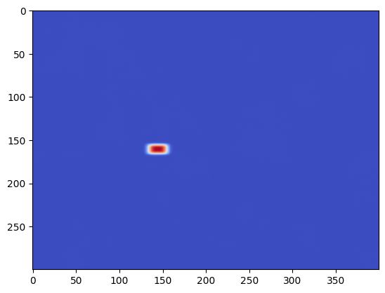

KB Mirrors¶
This example simulates the alignment of a KB mirror endstation (with four degrees of freedom).
[1]:
from blop.utils import prepare_re_env # noqa
%run -i $prepare_re_env.__file__ --db-type=temp
bec.disable_plots()
[2]:
from blop.sim import Beamline
beamline = Beamline(name="bl")
[3]:
from blop import DOF, Agent, Objective
from blop.digestion import beam_stats_digestion
dofs = [
DOF(description="KBV downstream", device=beamline.kbv_dsv, search_domain=(-5.0, 5.0)),
DOF(description="KBV upstream", device=beamline.kbv_usv, search_domain=(-5.0, 5.0)),
DOF(description="KBH downstream", device=beamline.kbh_dsh, search_domain=(-5.0, 5.0)),
DOF(description="KBH upstream", device=beamline.kbh_ush, search_domain=(-5.0, 5.0)),
]
objectives = [
Objective(name="bl_det_sum", target="max", transform="log", trust_domain=(200, np.inf)),
Objective(name="bl_det_wid_x", target="min", transform="log", latent_groups=[("bl_kbh_dsh", "bl_kbh_ush")]),
Objective(name="bl_det_wid_y", target="min", transform="log", latent_groups=[("bl_kbv_dsv", "bl_kbv_usv")]),
]
agent = Agent(
dofs=dofs,
objectives=objectives,
detectors=[beamline.det],
digestion=beam_stats_digestion,
digestion_kwargs={"image_key": "bl_det_image"},
verbose=True,
db=db,
tolerate_acquisition_errors=False,
enforce_all_objectives_valid=True,
train_every=3,
)
(uid,) = RE(agent.learn("qr", n=32))
2025-03-04 22:06:15.709 INFO: Executing plan <generator object Agent.learn at 0x7ff7fabf5e00>
2025-03-04 22:06:15.713 INFO: Change state on <bluesky.run_engine.RunEngine object at 0x7ff7fac435e0> from 'idle' -> 'running'
2025-03-04 22:06:15.715 INFO: running iteration 1 / 1
Transient Scan ID: 1 Time: 2025-03-04 22:06:15
Persistent Unique Scan ID: 'a55338ba-fb5d-4329-87a7-256122d77a97'
New stream: 'primary'
+-----------+------------+------------+------------+------------+------------+------------+--------------+--------------+--------------+--------------+
| seq_num | time | bl_kbv_dsv | bl_kbv_usv | bl_kbh_dsh | bl_kbh_ush | bl_det_sum | bl_det_cen_x | bl_det_cen_y | bl_det_wid_x | bl_det_wid_y |
+-----------+------------+------------+------------+------------+------------+------------+--------------+--------------+--------------+--------------+
| 1 | 22:06:15.8 | -0.933 | -0.776 | 0.694 | -0.786 | 519.792 | 169.338 | 151.435 | 33.210 | 73.381 |
| 2 | 22:06:15.9 | 0.114 | -0.522 | -1.192 | -1.318 | 486.889 | 195.924 | 139.882 | 92.549 | 47.853 |
| 3 | 22:06:16.0 | 3.974 | 2.643 | 0.948 | -4.234 | 205.351 | 128.714 | 129.384 | 52.901 | 89.121 |
| 4 | 22:06:16.1 | 1.085 | 1.200 | 2.055 | -3.434 | 198.397 | 112.769 | 150.832 | 24.411 | 10.144 |
| 5 | 22:06:16.2 | 1.332 | -2.548 | 4.493 | -4.674 | -4.190 | 200.496 | 142.552 | 385.416 | 223.388 |
| 6 | 22:06:16.3 | 3.609 | -1.099 | 3.744 | -2.974 | 0.847 | 179.356 | 142.659 | 258.100 | 236.606 |
| 7 | 22:06:16.4 | 4.486 | 1.637 | 2.956 | 2.187 | 375.099 | 182.770 | 113.100 | 105.840 | 69.060 |
| 8 | 22:06:16.4 | 2.089 | -1.699 | 1.285 | 1.728 | 499.753 | 208.048 | 93.105 | 55.513 | 31.752 |
| 9 | 22:06:16.5 | 2.931 | -4.624 | 0.478 | 0.928 | 53.080 | 207.943 | 79.715 | 18.299 | 10.235 |
| 10 | 22:06:16.6 | -0.020 | -4.751 | 2.584 | 3.106 | 191.022 | 207.107 | 110.763 | 112.493 | 65.503 |
| 11 | 22:06:16.7 | -4.961 | -1.426 | 4.335 | 4.532 | 33.673 | 197.568 | 172.789 | 169.313 | 98.309 |
| 12 | 22:06:16.8 | -3.674 | -4.097 | -0.136 | 1.333 | 43.871 | 228.160 | 148.361 | 17.570 | 130.728 |
| 13 | 22:06:16.8 | -4.126 | -3.077 | 2.387 | -1.860 | 76.933 | 114.053 | 150.874 | 21.217 | 128.938 |
| 14 | 22:06:16.9 | -3.135 | 0.675 | 4.787 | -0.619 | 135.217 | 118.604 | 189.972 | 34.965 | 60.588 |
| 15 | 22:06:17.0 | -1.807 | 2.982 | 3.372 | -2.046 | 50.847 | 101.054 | 217.000 | 5.137 | 11.300 |
| 16 | 22:06:17.1 | 0.494 | 4.569 | 4.041 | 0.487 | 259.930 | 139.724 | 199.775 | 72.689 | 43.224 |
| 17 | 22:06:17.2 | -2.779 | 4.806 | 1.617 | 3.292 | -4.355 | 207.482 | 146.955 | 292.613 | 246.250 |
| 18 | 22:06:17.3 | -2.241 | 1.487 | 0.224 | 4.366 | 268.199 | 263.615 | 198.762 | 63.469 | 44.499 |
| 19 | 22:06:17.4 | 1.732 | 2.211 | -0.429 | 3.531 | 432.191 | 272.132 | 156.054 | 47.619 | 40.042 |
| 20 | 22:06:17.5 | 3.210 | 3.966 | -1.489 | 3.824 | 151.495 | 291.033 | 159.833 | 14.063 | 98.817 |
| 21 | 22:06:17.6 | 2.313 | 3.236 | -3.480 | -0.078 | 317.890 | 249.563 | 161.416 | 88.570 | 66.726 |
| 22 | 22:06:17.6 | 2.706 | 0.617 | -4.602 | -2.284 | 184.699 | 217.714 | 117.828 | 145.279 | 27.604 |
| 23 | 22:06:17.7 | 4.866 | -3.135 | -1.967 | -1.025 | 0.650 | 197.964 | 152.143 | 378.064 | 273.199 |
| 24 | 22:06:17.8 | 4.217 | -2.266 | -3.816 | 2.564 | 0.040 | 210.951 | 127.416 | 329.553 | 205.695 |
| 25 | 22:06:17.9 | 0.841 | -4.028 | -3.025 | 4.771 | 1.466 | 211.288 | 139.600 | 349.983 | 203.563 |
| 26 | 22:06:18.0 | -1.267 | -2.109 | -1.861 | 1.000 | 407.400 | 255.818 | 136.976 | 49.179 | 101.819 |
| 27 | 22:06:18.0 | -2.151 | -3.740 | -4.856 | -2.579 | 31.135 | 226.992 | 141.189 | 130.392 | 94.925 |
| 28 | 22:06:18.1 | -0.578 | 0.008 | -2.339 | -3.839 | 209.598 | 182.218 | 158.177 | 147.294 | 49.504 |
| 29 | 22:06:18.2 | -2.868 | -0.103 | -3.147 | -4.746 | 25.727 | 181.565 | 183.604 | 145.035 | 70.733 |
| 30 | 22:06:18.3 | -4.402 | 3.639 | -0.899 | -3.506 | 0.265 | 161.526 | 170.967 | 302.631 | 222.167 |
| 31 | 22:06:18.4 | -4.056 | 2.165 | -2.692 | 0.092 | 132.320 | 251.665 | 210.953 | 80.949 | 23.188 |
| 32 | 22:06:18.5 | -1.003 | 4.159 | -4.070 | 2.260 | 37.465 | 289.478 | 218.208 | 16.699 | 9.933 |
+-----------+------------+------------+------------+------------+------------+------------+--------------+--------------+--------------+--------------+
generator list_scan ['a55338ba'] (scan num: 1)
2025-03-04 22:06:21.720 INFO: Change state on <bluesky.run_engine.RunEngine object at 0x7ff7fac435e0> from 'running' -> 'idle'
2025-03-04 22:06:21.721 INFO: Cleaned up from plan <generator object Agent.learn at 0x7ff7fabf5e00>
[4]:
RE(agent.learn("qei", n=4, iterations=4))
2025-03-04 22:06:21.730 INFO: Executing plan <generator object Agent.learn at 0x7ff7f12ed380>
2025-03-04 22:06:21.733 INFO: Change state on <bluesky.run_engine.RunEngine object at 0x7ff7fac435e0> from 'idle' -> 'running'
2025-03-04 22:06:21.734 INFO: running iteration 1 / 4
Transient Scan ID: 2 Time: 2025-03-04 22:06:24
Persistent Unique Scan ID: '986a0ad4-f3d2-4d4b-9a98-34a01e6f6338'
New stream: 'primary'
+-----------+------------+------------+------------+------------+------------+------------+--------------+--------------+--------------+--------------+
| seq_num | time | bl_kbv_dsv | bl_kbv_usv | bl_kbh_dsh | bl_kbh_ush | bl_det_sum | bl_det_cen_x | bl_det_cen_y | bl_det_wid_x | bl_det_wid_y |
+-----------+------------+------------+------------+------------+------------+------------+--------------+--------------+--------------+--------------+
| 1 | 22:06:24.3 | -0.342 | -0.544 | -1.726 | -1.253 | 441.855 | 208.524 | 145.647 | 105.800 | 56.219 |
| 2 | 22:06:24.4 | 0.448 | 2.495 | 2.412 | -1.747 | 544.002 | 116.026 | 179.722 | 18.974 | 20.528 |
| 3 | 22:06:24.4 | 0.324 | 2.316 | 1.114 | -0.305 | 548.271 | 170.884 | 178.901 | 17.282 | 15.491 |
| 4 | 22:06:24.5 | 1.368 | -1.132 | 1.139 | 1.561 | 531.034 | 207.444 | 111.564 | 47.455 | 35.567 |
+-----------+------------+------------+------------+------------+------------+------------+--------------+--------------+--------------+--------------+
generator list_scan ['986a0ad4'] (scan num: 2)
2025-03-04 22:06:25.843 INFO: running iteration 2 / 4
Transient Scan ID: 3 Time: 2025-03-04 22:06:30
Persistent Unique Scan ID: 'cd6a46d5-0a4f-406a-bd30-abb055650551'
New stream: 'primary'
+-----------+------------+------------+------------+------------+------------+------------+--------------+--------------+--------------+--------------+
| seq_num | time | bl_kbv_dsv | bl_kbv_usv | bl_kbh_dsh | bl_kbh_ush | bl_det_sum | bl_det_cen_x | bl_det_cen_y | bl_det_wid_x | bl_det_wid_y |
+-----------+------------+------------+------------+------------+------------+------------+--------------+--------------+--------------+--------------+
| 1 | 22:06:30.2 | 0.667 | 1.376 | 0.059 | 0.651 | 555.370 | 210.692 | 159.670 | 17.927 | 9.106 |
| 2 | 22:06:30.3 | -0.309 | 2.071 | 2.089 | -0.707 | 550.018 | 143.167 | 184.519 | 19.311 | 9.673 |
| 3 | 22:06:30.3 | -0.827 | 2.609 | -0.795 | 1.508 | 549.295 | 244.875 | 200.500 | 18.275 | 9.637 |
| 4 | 22:06:30.4 | -4.585 | 1.879 | -3.197 | 3.606 | 1.412 | 186.396 | 132.365 | 195.431 | 132.209 |
+-----------+------------+------------+------------+------------+------------+------------+--------------+--------------+--------------+--------------+
generator list_scan ['cd6a46d5'] (scan num: 3)
2025-03-04 22:06:31.741 INFO: running iteration 3 / 4
Transient Scan ID: 4 Time: 2025-03-04 22:06:35
Persistent Unique Scan ID: 'd88981d8-4a23-4352-89cf-23b2e9457363'
New stream: 'primary'
+-----------+------------+------------+------------+------------+------------+------------+--------------+--------------+--------------+--------------+
| seq_num | time | bl_kbv_dsv | bl_kbv_usv | bl_kbh_dsh | bl_kbh_ush | bl_det_sum | bl_det_cen_x | bl_det_cen_y | bl_det_wid_x | bl_det_wid_y |
+-----------+------------+------------+------------+------------+------------+------------+--------------+--------------+--------------+--------------+
| 1 | 22:06:35.5 | 0.557 | 1.369 | 4.400 | 5.000 | 105.345 | 201.608 | 161.021 | 172.054 | 8.888 |
| 2 | 22:06:35.6 | -0.717 | 2.123 | 0.293 | 0.723 | 548.239 | 207.521 | 191.500 | 16.418 | 14.744 |
| 3 | 22:06:35.7 | -0.539 | 2.633 | -0.674 | 0.732 | 551.497 | 227.056 | 196.462 | 29.033 | 9.392 |
| 4 | 22:06:35.8 | 4.199 | 5.000 | -5.000 | -5.000 | 11.147 | 212.541 | 155.684 | 199.568 | 128.639 |
+-----------+------------+------------+------------+------------+------------+------------+--------------+--------------+--------------+--------------+
generator list_scan ['d88981d8'] (scan num: 4)
2025-03-04 22:06:37.149 INFO: running iteration 4 / 4
Transient Scan ID: 5 Time: 2025-03-04 22:06:41
Persistent Unique Scan ID: 'dc90e79c-4b18-4f22-ad1a-dbdcfb170a35'
New stream: 'primary'
+-----------+------------+------------+------------+------------+------------+------------+--------------+--------------+--------------+--------------+
| seq_num | time | bl_kbv_dsv | bl_kbv_usv | bl_kbh_dsh | bl_kbh_ush | bl_det_sum | bl_det_cen_x | bl_det_cen_y | bl_det_wid_x | bl_det_wid_y |
+-----------+------------+------------+------------+------------+------------+------------+--------------+--------------+--------------+--------------+
| 1 | 22:06:41.4 | 0.530 | 1.537 | 1.383 | -1.361 | 545.368 | 144.375 | 164.011 | 30.587 | 8.789 |
| 2 | 22:06:41.4 | 0.627 | 1.371 | 1.746 | -1.014 | 542.240 | 143.809 | 160.020 | 17.732 | 8.760 |
| 3 | 22:06:41.5 | -0.183 | 2.185 | -0.309 | 1.723 | 546.536 | 239.500 | 184.315 | 19.357 | 8.976 |
| 4 | 22:06:41.6 | -1.521 | 3.542 | 0.156 | 1.673 | 235.897 | 229.500 | 221.529 | 26.000 | 4.423 |
+-----------+------------+------------+------------+------------+------------+------------+--------------+--------------+--------------+--------------+
generator list_scan ['dc90e79c'] (scan num: 5)
2025-03-04 22:06:42.930 INFO: Change state on <bluesky.run_engine.RunEngine object at 0x7ff7fac435e0> from 'running' -> 'idle'
2025-03-04 22:06:42.931 INFO: Cleaned up from plan <generator object Agent.learn at 0x7ff7f12ed380>
[4]:
('986a0ad4-f3d2-4d4b-9a98-34a01e6f6338',
'cd6a46d5-0a4f-406a-bd30-abb055650551',
'd88981d8-4a23-4352-89cf-23b2e9457363',
'dc90e79c-4b18-4f22-ad1a-dbdcfb170a35')
[5]:
plt.imshow(agent.best.bl_det_image)
[5]:
<matplotlib.image.AxesImage at 0x7ff7f0fe06a0>

[6]:
agent.plot_objectives(axes=(2, 3))